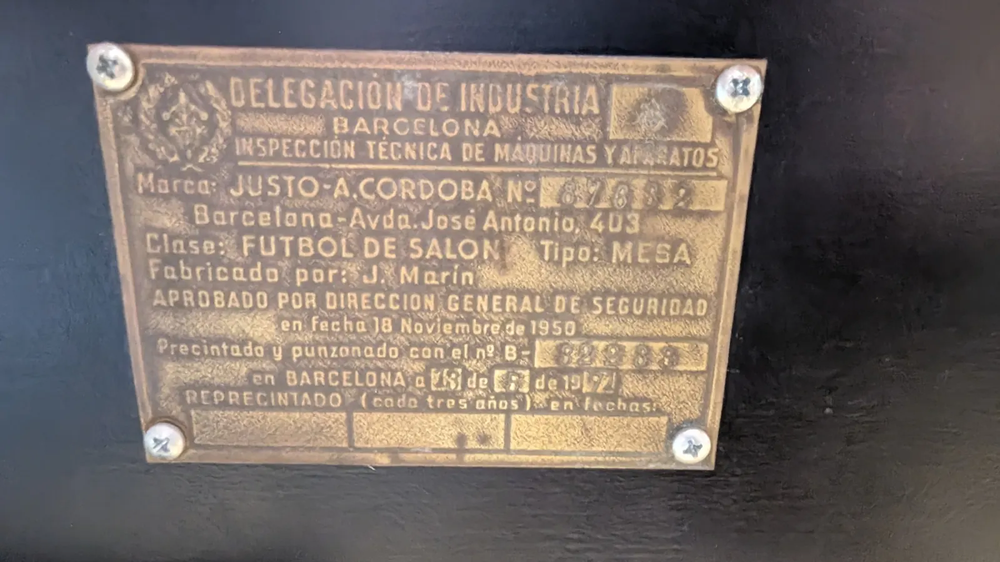

02
Un Córdoba de toda la vida
Es un futbolín Córdoba antiguo, negro y restaurado. Eso fijó las reglas del montaje:
- Por fuera, igual que siempre. Sin pantallas pegadas ni botones nuevos. Lo único que se ve es un interruptor general, por debajo.
- La portería no se toca. La bola es maciza y sale disparada: cualquier sensor dentro de la portería acabaría roto o devolviendo la bola al campo.
- Sin cables mientras se juega. Todo va a batería.
- Sin botones en el futbolín. Todo se maneja desde Home Assistant.
El ábaco de cuentas rojas y azules sigue en su sitio, por si acaso.

